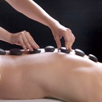

Piedras armonizantes
Tal vez, la palabra energía que emplean en oriente podamos nosotras, occidentales, traducirla como fuerza, o como circulación. La energía del universo y la energía del cuerpo están ligadas, la fuerza se activa para que el organismo alcance su equilibrio: consigo mismo, con el cosmos. En los masajes con cañas de bambú, lo que se pone en marcha es la vida de cada uno de los siete chakras, puntos fundamentales a tratar si se busca armonización completa.